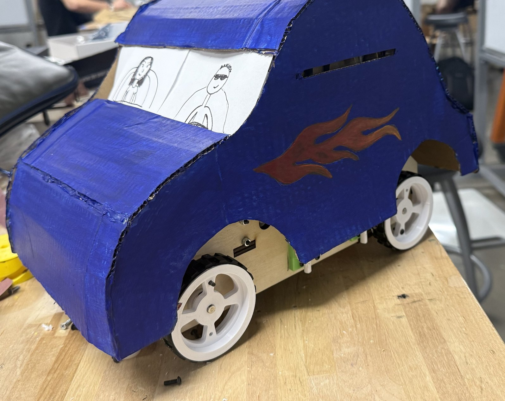
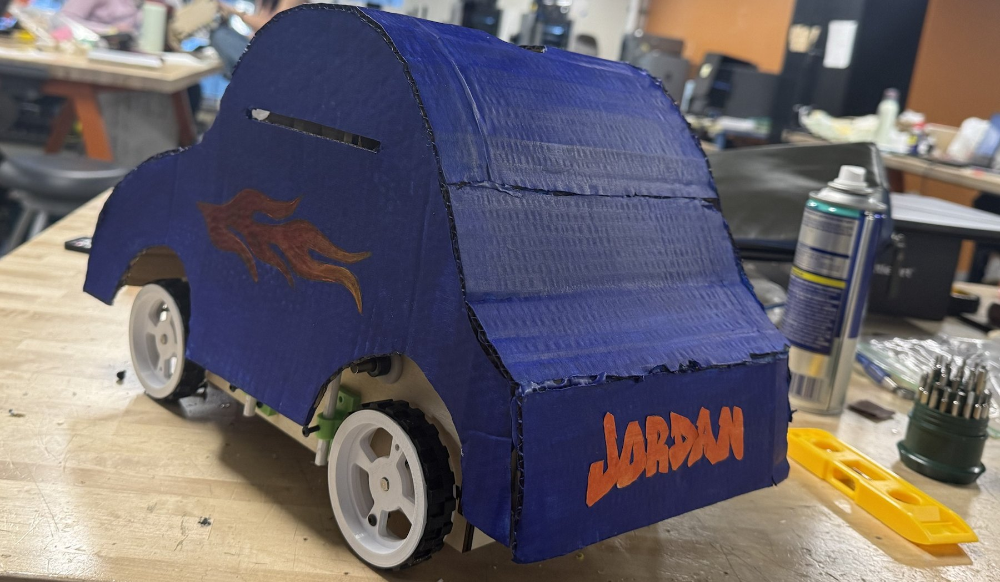

I designed the complete four-speed transmission for a small rover, from the gears and shafts to the supporting components, then built the drivetrain, tested it and refined the design based on what the tests showed.
- Date
- 2026
- My role
- Complete transmission CAD, build & testing
- Gears
- 4 speeds
- Built with
- 3D-printed gears, laser-cut chassis
The Drivetrain

The gear train sits inside a laser-cut wooden chassis, with 3D-printed spur gears running on steel shafts and bearings.
Testing
- Top speed
- 2 m/s
- Ramp pull
- 3 kg load up a ramp
- Drop test
- Survived 5 kg
For the drop test, a 5 kg weight was released through a guide tube onto the car. Afterward, the body came off to check the chassis and gears, and the drivetrain had come through intact. Each round of physical testing fed back into the design.
The Finished Car
The rover's painted cardboard body, flames and all, fits over the chassis and lifts off for access.

